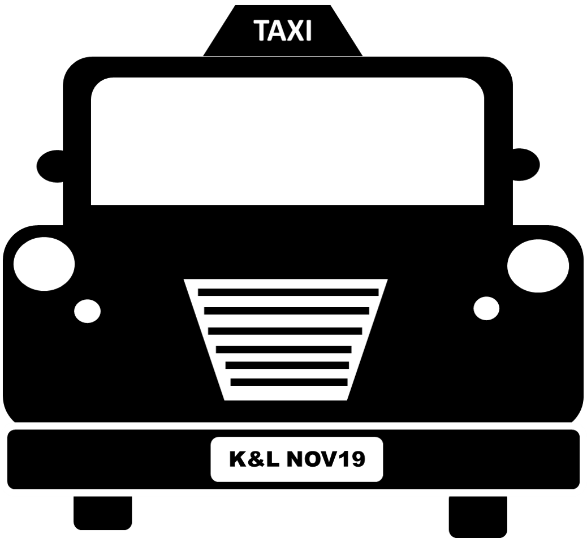
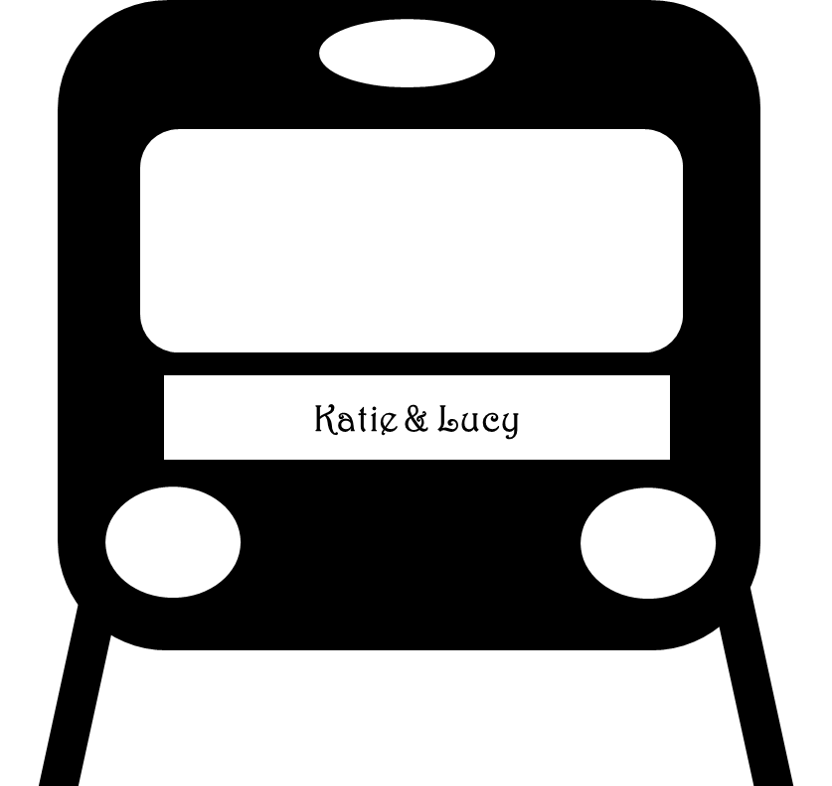
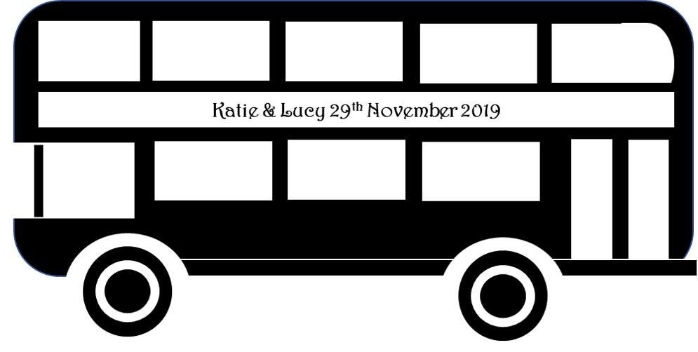
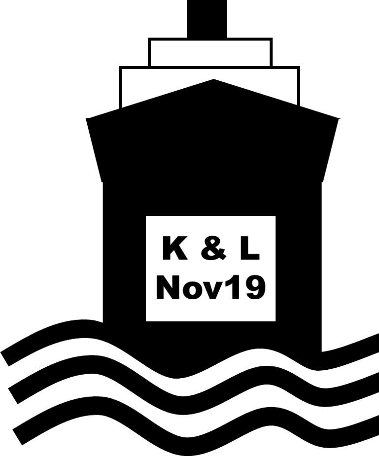

Katie & Lucy
November 29th 2019
Dickens Inn, London
RSVP
Lucy Line
Katie Line
Location
The Dickens Inn, Marble Quay, St Katharine's Way, St Katharine's & Wapping, London E1W 1UH
-
Please note that as the venue is on the docks there is no parking whatsoever. Do not bring your car!
- Taxi options are:
-
If you are coming by taxi the closest drivable road is Mews Street by Mala Indian Restaurant. It is then around a 60m walk to the venue.
- Nearby train stations include:
-
Tower Hill on the District and Circle underground lines. It is then an 8 minute walk to the venue.
-
Fenchurch Street Railway Station on the Mainline. It is then a 9 minute walk to the venue.
-
Tower Gateway on the DLR. It is then a 7 minute walk to the venue.
- Buses that stop near the venue include:
-
The 100 stops at Stockholm Way, Nesham Street and The Highway which are all a 5 minute walk from the venue.
- The RV1 stops at The Tower of London (Stop TH) which is a 6 minute walk to the venue
-
The 42 and 78 both stop at Tower Bridge City Hall which is a 9 minute walk to the venue
-
The 343 stops at City Hall which is an 11 minute walk to the venue
-
The 188 stops at Druid Street which is a 12 minute walk to the venue
- Boat options are:
-
Nearest ferry stop is St Katherines Pier, served by Thames River Services and Circular Cruises. It is then a 3 minute walk to the venue.
Accomodation
There are a load of different accommodation options within walking distance of the venue. Listed below are options all within ½ a mile of the venue, but the list is not exhaustive! Prices are based on an online search for 1 night for 2 adults using a Friday in November in 2018 as the date. Prices will be subject to change by 2019 but we have listed prices to give an idea. We have listed the websites of the hotels but remember to check travel websites like expedia which may offer a better price. There are also plenty of options on AirBnB. Prices seem to be in the £60-£140 range.
-
Wombat’s City Hostel London - £44. Hostel with free Wi-Fi and bar.
-
Travelodge London Central Aldgate East Hotel - £69. 3-star hotel with dining and bar.
-
Travelodge London Central Tower Bridge - £79. 3-star hotel with dining and bar.
- The Tower Hotel - £82. 4-star riverside hotel.
-
Premier Inn London City Tower Hill - £103. 3-star hotel.
- Grange Tower Bridge Hotel - £122. 5-star hotel with pool and dining.
- Hilton London Tower Bridge - £127. 4-star hotel with Italian dining.
- The Lalit London - £145. 5-star hotel with Indian Restaurant.
- Cheval Three Quays - £204. 5-star hotel overlooking the river.
Gifts
We’re still working on this section. Please check back closer to the wedding.